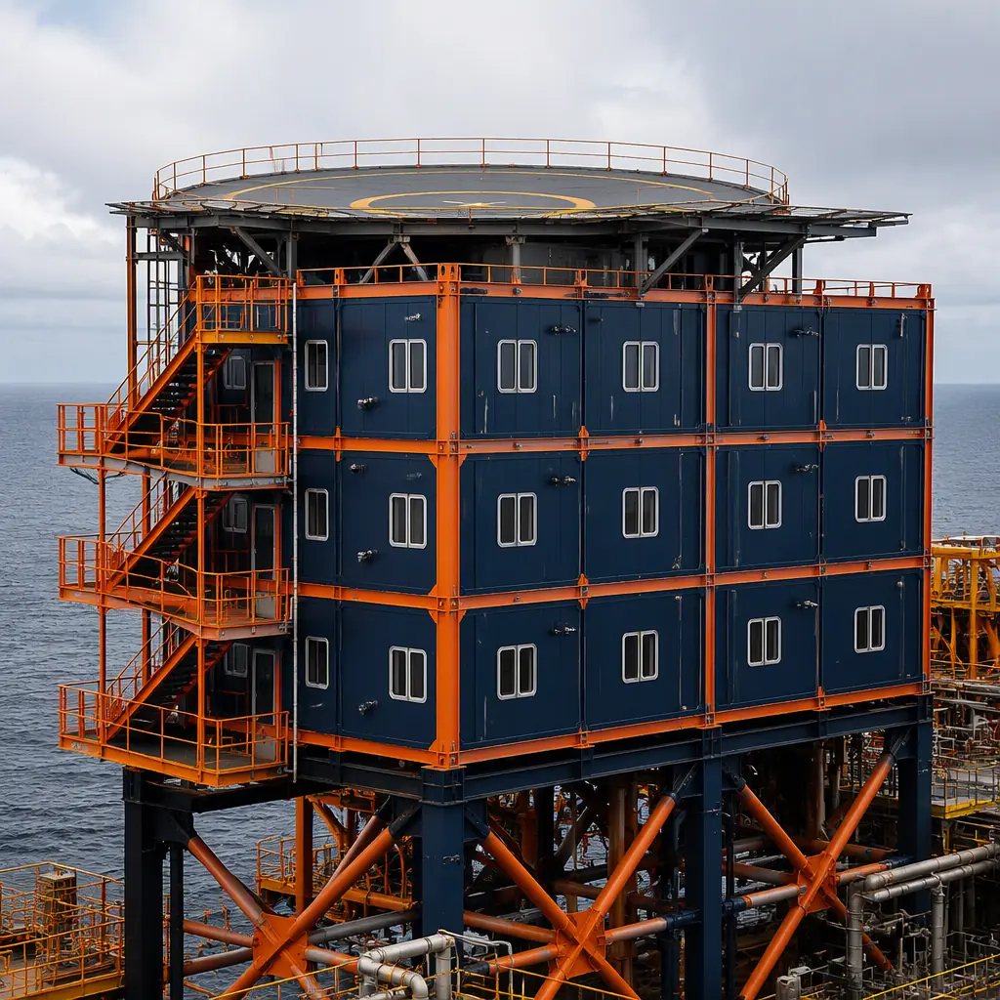
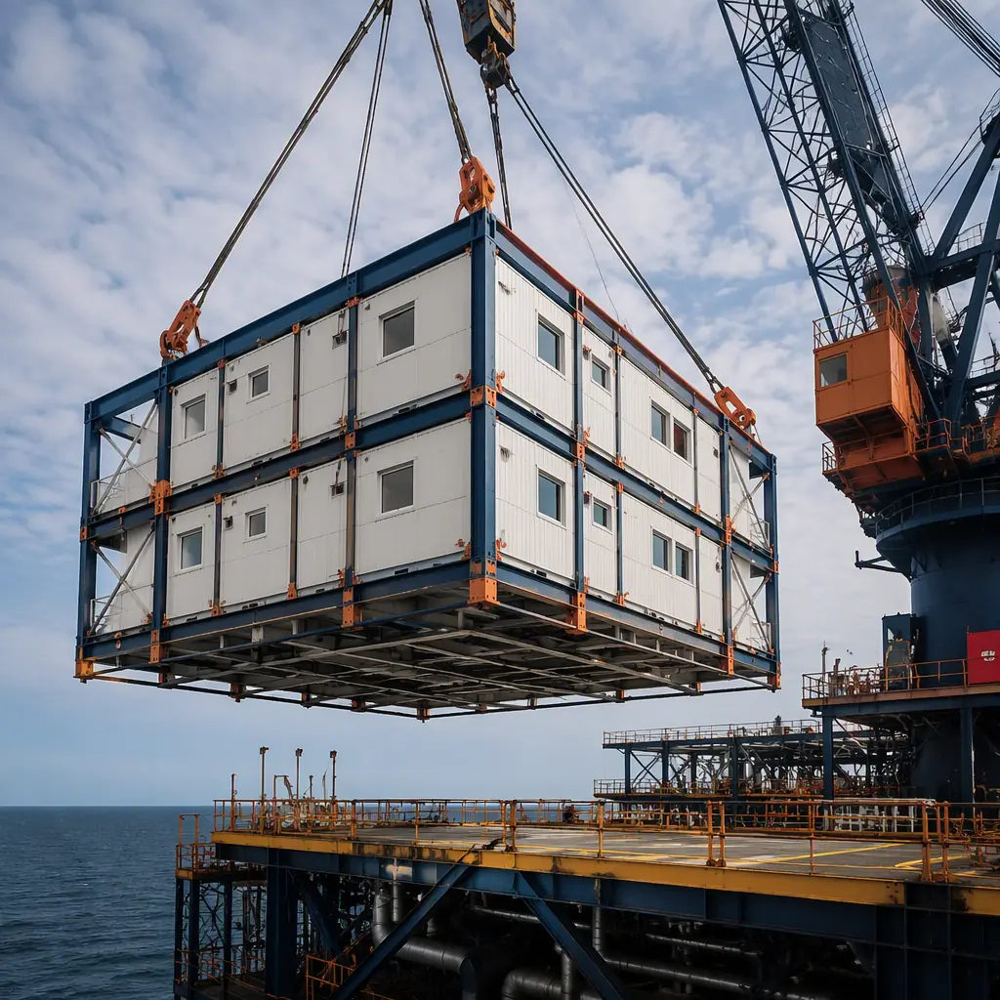
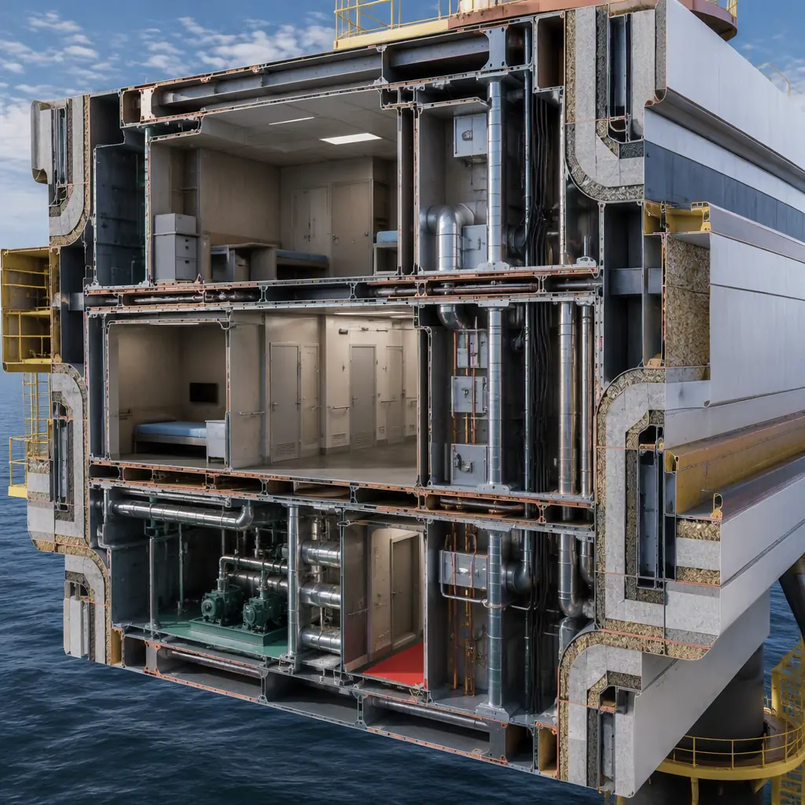
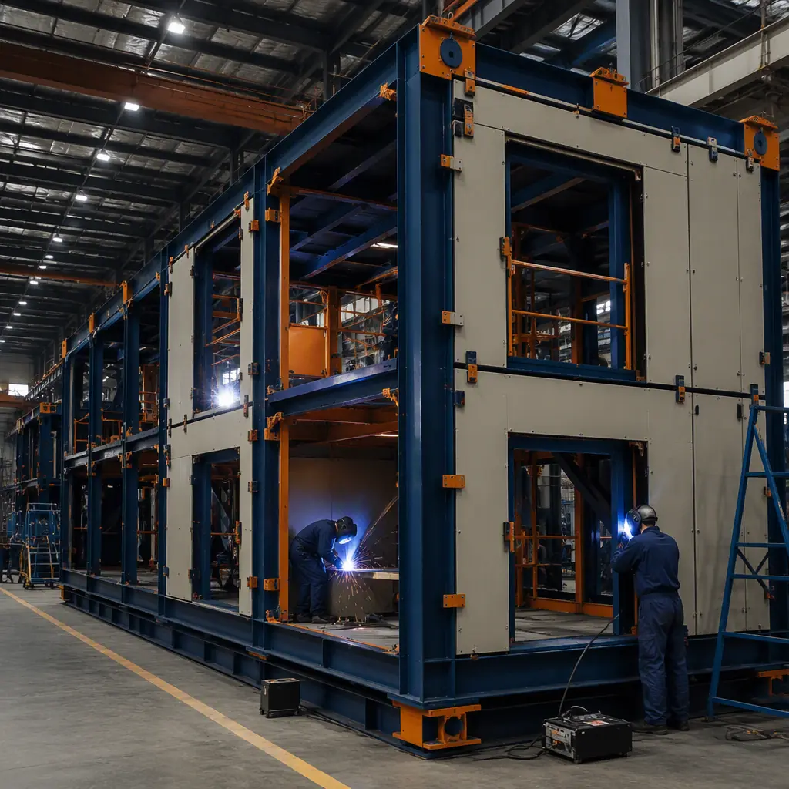
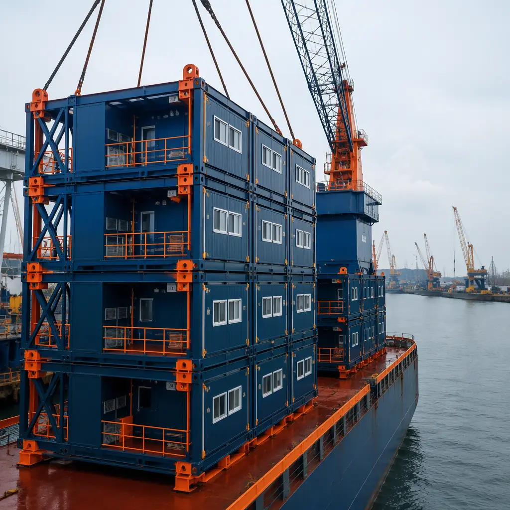

Offshore energy operations live or die on accommodation: every platform, drilling rig, and offshore wind substation needs quarters for the crew that keeps it running — blast-resistant living modules, galley and mess units, control rooms, medical facilities, and the marine support buildings onshore that provision the whole operation. These are the most demanding buildings in construction: engineered to NORSOK and EEMUA standards, rated for blast overpressure, built to survive marine corrosion, and transported on barges and lifted by heavy cranes onto decks that may be 50 meters above the sea. Conventionally fabricated, a 60-person quarters module package takes 14–24 months and commands premium offshore fabrication pricing. Modular prefabricated construction is the industry's native delivery method — the quarters are factory-built as steel-frame modules, blast-tested and outfitted in the plant, then transported and lifted into place as complete units — the same factory-built logic we document for modular heavy industrial construction, applied to the most corrosive, regulated environment in the built world. This guide covers offshore accommodation modules, blast and marine engineering, transport and lifting, onshore marine support facilities, cost structure, and certification for operators, EPC contractors, and marine infrastructure developers.

Why Offshore Quarters Are a Different Building Species
An offshore accommodation module looks like a shipping container and performs like a pressure vessel. Five engineering disciplines separate it from every onshore building type:
- Blast resistance is a life-safety requirement. Offshore platforms carry hydrocarbons under pressure, and quarters must survive a defined blast overpressure without progressive collapse. Blast walls are engineered to a specified design load (commonly 0.3–1.0 bar overpressure), and the module structure is analyzed as a blast-rated assembly — the safety-and-compliance discipline we document for modular construction site safety, taken to its structural extreme.
- Marine corrosion governs every material. Salt-laden atmosphere, splash zones, and permanent humidity attack steel at rates that make onshore coatings fail in months. Offshore modules use marine-grade coatings, corrosion-resistant fasteners, and sealed penetrations throughout — a materials discipline detailed in our coastal and flood-resistant construction guide.
- Dynamic loads are permanent. A module on a platform experiences wave-induced motion, helicopter landings on the deck above, and crane impacts. Structure and contents are engineered for dynamic loading that onshore codes never consider.
- Weight is budget. Every tonne of quarters is a tonne of platform deck capacity, so modules are weight-optimized in the factory — the structural-efficiency logic we document for modular steel construction, where the structure is engineered to its exact load path rather than over-built.
- Transport defines the design. Modules must fit barge decks, pass under bridges, survive sea state, and lift onto the platform — the transport envelope is fixed before the structure is designed, the logistics-first approach we detail for modular construction transportation and logistics.
The result is a building type where the factory is not an advantage but a necessity: blast-tested welds, marine-coated steel, and weight-optimized structure are all plant-controlled processes.

The Offshore Module Package
An offshore accommodation program divides into modules that are fabricated, outfitted, blast-rated, and certified in the plant, then integrated offshore:
Accommodation & Quarters Modules
Quarters modules carry the crew: sleeping cabins (single and double), bathrooms, laundry, and day rooms, with the corridor and escape-route geometry engineered to offshore egress standards. Modules are sized to platform lifting capacity — typically 3–4.5 m wide, 10–15 m long, 20–45 tonnes — and stacked or arranged around the platform's existing deck. Each module is outfitted with HVAC sized for offshore climate, fire and gas detection, and the public-address and alarm systems that platform life-safety requires. The same crew-accommodation logic applies to remote workforce housing onshore, but offshore modules add blast walls, marine coatings, and dynamic-load engineering.
Galley, Mess, Medical & Control Modules
The galley and mess module feeds the crew with a commercial kitchen engineered for marine motion — equipment tied down, gimbaled where needed, and ventilation sized for the menu — the industrial food-service logic we document for heavy industrial facility construction. Medical modules carry the clinic and isolation space offshore platforms are required to provide, and control-room modules house the platform's operations and monitoring functions with the precision power and cooling we cover for modular data center construction.
Helideck & Deck Integration
Large quarters packages integrate helideck support: the module structure is designed to carry helicopter landing loads, with the deck grating, tie-downs, and fire-fighting systems integrated in the factory. Deck integration is engineered as an interface package — the module's structural, piping, electrical, and HVAC connections terminate at defined interface points that mate with the platform's existing systems, the same interface-discipline we document for modular MEP systems integration.

Marine Transport, Lifting & Installation
Getting a quarters module from factory to platform is an engineered campaign, and modular delivery plans it as precisely as the building itself. Modules are transported by road to the load-out port, lifted onto a cargo barge, sea-fastened for the voyage, and lifted onto the platform by a heavy crane or the platform's own pedestal crane — the crane and rigging engineering we document for modular crane equipment and logistics. The schedule advantage is structural: because the quarters arrive as complete, tested units, offshore installation is measured in days of lifting and hook-up rather than months of site fabrication — the critical-path compression we detail for modular construction scheduling. For platform life-extension projects, new quarters modules are lifted into place while production continues, with hook-up scheduled into planned shutdown windows.
Onshore Marine Support & O&M Facilities
Behind every offshore installation stands an onshore support network: operation and maintenance (O&M) bases, crew-change and training facilities, warehousing, and fabrication support buildings at the ports that service the platforms and wind farms. These follow the same modular logic as the offshore units — factory-built steel-frame buildings delivered fast on constrained port sites — and are covered by the same delivery playbook we document for modular industrial and warehouse construction and transit and depot facilities. For offshore wind, the O&M base is the critical enabler: it must be operational before the first turbine is installed, and modular delivery compresses that schedule by months.
Cost Structure — Modular vs. Conventional Offshore Fabrication
| Cost Category | Conventional (60-POB quarters package) | Modular (60-POB quarters package) |
|---|---|---|
| Blast-rated structure & outfitting | $6.5–11M | $5.0–8.5M (factory-built) |
| Marine coatings & corrosion protection | $0.8–1.6M | $0.5–1.0M (plant-applied) |
| MEP, fire & gas systems | $2.2–4.0M | $1.6–2.9M (plant-integrated) |
| Transport, lifting & offshore hook-up | $1.5–3.0M | $1.2–2.4M (engineered campaign) |
| Total Quarters Package | $11.0–19.6M | $8.3–14.8M |
The 20–25% cost reduction is secondary to the schedule: 6–12 months of earlier platform occupancy is months of earlier production revenue, and for life-extension projects it is months of deferred decommissioning. The full economics of modular project delivery are covered in our 2026 modular cost guide and our developer's ROI analysis.
Certification & Quality Assurance
Offshore modules are certified to standards that onshore buildings never encounter, and the factory is where that certification is earned. NORSOK C-002 governs living quarters design, EEMUA 191 provides the alarm system engineering framework, and class societies — ABS, DNV, Bureau Veritas — survey fabrication, welding, and outfitting against marine rules. Factory fabrication concentrates every weld, coating, and system test under the surveyor's supervision, compressing the certification schedule that conventionally stretches across a dispersed site — the quality-assurance framework we document for modular factory QC systems. The design also benefits from the extreme-conditions engineering we cover for extreme climate construction: offshore is simply the most extreme climate on the list.

Is Modular Right for Your Marine Project?
Modular offshore delivery is the standard for quarters and support packages on oil and gas platforms, drilling rigs, FPSOs, and offshore wind substations — not because it is cheaper, but because it is the only delivery method that certifies blast resistance, marine durability, and crew safety in a controlled environment. The value is strongest for new platform quarters, life-extension and upgrade programs on existing assets, crew-change and hotel vessels, and the onshore O&M bases that support offshore wind fleets. For operators and EPC contractors, the procurement path and risk allocation are covered in our RFP procurement guide and our project risk reduction guide. In every case, the factory-built module delivers the blast rating, marine-grade durability, and certified quality that offshore operations depend on.
